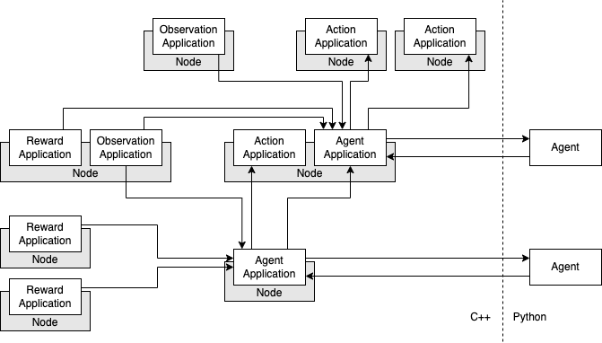
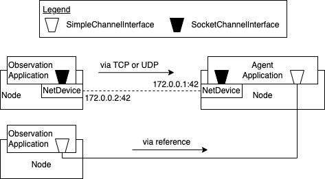
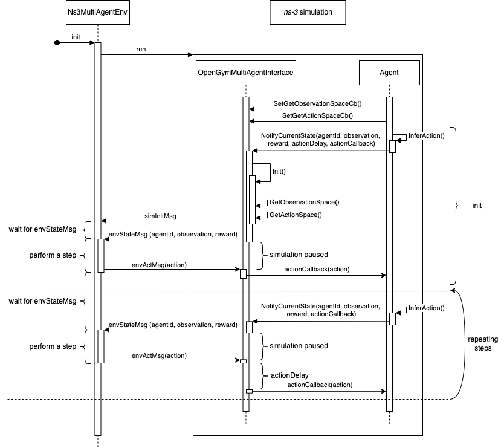
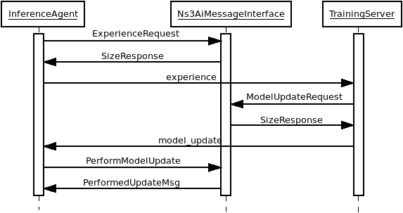

The goal of this module is to support the integration of reinforcement
learning (RL) components into network scenarios to simulate their
deployment and the communication between them. Typical RL tasks include
agents, actions, observations and rewards as their main components. In a
network, these components are often placed on different nodes. For example,
collecting observations and training an agent often happen at different
locations in the network. To associate these RL components with Nodes,
the abstraction of user applications is used. The following
applications inherit from a general RlApplication:
ObservationApplication: observes part of the network state and
communicates the collected data (i.e. observations or data used to calculate
observations) to one or more agents
RewardApplication: collects data to calculate a reward and communicates
it to one or more agents
AgentApplication: represents the training and/or inference agent
in the network.
ActionApplication: executes an action that was inferred by an agent
and thereby changes a part of the network state
A commonly used standard for implementing RL environments is the
Gymnasium standard [Gymnasium], which is based on Python. With RLLib (Ray) [RLLib] an
extensive Python library for RL exists that uses this standard as an
interface for single-agent training. As ns-3 is implemented in C++, a
connection with the mainly Python-based RL frameworks needs to be
established. This module uses ns3-ai[ns3-ai] for the inter-process communication.
Possible use cases this module is designed for are the following:
Simulation of communication overhead between RL components
Simulating how calculation and/or communication delays influence the
performance of an RL approach via configurable delays
Testing and evaluating tradeoffs between different RL deployments,
e.g., distributed deployment on several nodes vs. centralized
deployment on a single node

Example scenario setup that should be supported by the framework¶
To make these generalized use cases possible, the following main
requirements have been considered:
The following class diagram includes all classes provided by DEFIANCE. You can also find member variables and class methods that are particularly important.
This module provides a framework to simulate different RL components by different
RlApplications. The main tasks that the framework performs for the user in
order to make it well usable are the following:
provide frameworks for prototypical RlApplications,
provide helper functionality to support creation of RlApplications and
their installation on Nodes,
enable typical communication between RlApplications, and
handle the interaction between RlApplications and the Python-based
training/inference processes in compliance with the typical RL workflow.
In addition to these tasks performed by the framework, some aspects of the
RlApplications strongly depend on the specific RL task and solution
approach that is to be implemented. Therefore, custom code provided by the user
of the framework has to be integrated into the RlApplications. Typically,
this mainly concerns the following aspects of RlApplications:
Data collection: How are observations and rewards collected/calculated exactly?
Communication between RlApplications: When and to whom are messages sent?
Behavior of agents: At what frequency does the agent step? What triggers a step?
Execution of actions: What happens exactly when a specific action occurs?
A typical example of necessary customization is an ObservationApplication
which should be registered at a specific ns-3 trace source to provide it with the
necessary data. The according trace source and its signature have to be
configurable as they depend on the specific scenario. Additionally it should
be configurable to which AgentApplications the collected data is sent.
One option to solve this task are callbacks: The user could create
functions outside the according RlApplication with a distinct interface.
Those could then be registered as callbacks in the according RlApplication.
Whenever user-specific code is required, the RlApplication would then
call these callbacks. Similarly, the RlApplication could provide a method
with a distinct interface. The user then has to register this method at a trace
source to provide the RlApplication with data. This option is not very
flexible as all function signatures have to be fixed and known already when the
RlApplication class is designed. Another drawback
of this approach is that there is no defined location for the custom
code of an RlApplication.
Therefore, an approach using inheritance was chosen: The RlApplications
are designed as abstract classes from which the user has to inherit in
order to add the scenario-specific code. This has the advantage that all
code connected to an RlApplication is collected in a single class.
Additionally, it guarantees that all necessary methods are implemented
and usable defaults can be implemented for methods that may be
customized.
This framework is supposed to allow communication between RlApplications in a
custom scenario. Therefore, it is the task of the framework user to set
up the scenario and the communication channels between Nodes. This implies
that the user has to provide the framework with an abstraction of a
pre-configured channel over which data can be sent. Intuitively, this
would be sockets. Nevertheless, the framework should prevent the user
from the overhead of creating sockets. That is why the framework uses
IP addresses and the type of protocol as data the user has to
provide. Using this data, sockets can be created and connected to each
other.
RlApplications should handle the interfaces of their communication channels
transparently, e.g. independent from the protocol type. Additionally,
direct communication without simulated network traffic should be possible.
To this end, the ChannelInterface class was introduced as a generalized
interface used in RlApplications. It is subclassed by the
SocketChannelInterface class, which is responsible for creating sockets
when provided with the necessary information (IP addresses and protocol
type). The SimpleChannelInterface provides the RlApplications with the
same interface while maintaining a direct reference to another
SimpleChannelInterface to allow communication with a fixed delay (which
might also be 0).

Communication via SimpleChannelInterface and SocketChannelInterface¶
It should be noted that the framework should support multiple connections
over ChannelInterfaces between a single pair of RlApplications to allow
using different communication channels.
Simulating communication between RlApplications over simulated network
channels includes the chance that a channel is broken and that therefore
no communication is possible. This has to be handled by the underlying
protocols or the user of the framework, since the user is responsible for the
whole setup and configuration of the concrete network scenario.
The RlApplication generalizes functionality that is equal among all
applications provided by this module. This includes IDs to identify specific
RlApplication, functionality to send and to handle ChannelInterfaces.
In this way a generalized interface for all possible RL applications is
established which can be used by all classes handling all kinds of RL applications, like
the CommunicationHelper introduced in Helper.
In theory, multiple RlApplications of the same type can be installed on
the same Node. Nevertheless, this was not tested yet since in most cases
tasks of the same type (e.g. collecting observations) do not have to be
separated into different applications when performed on the same Node.
The AgentApplication represents an RL agent (which is trained with e.g.
RLLib) within the network. It has a scenario-specific
observation and action space. Currently, the framework is tested only with
fixed observation and action spaces (and not with parametric action
spaces).
The AgentApplication may receive observations and rewards from one or
multiple ObservationApplications resp. RewardApplications.
To support as many use cases as possible, it is also supported to receive
any data from ObservationApplications resp. RewardApplications, which is
not immediatly used as observations or rewards but from which observations
and rewards are derived by custom calculations. Therefore, the data
transmitted from ObservationApplications to AgentApplications (which is
called observation in the following) does not necessarily fit into the
observation space of the agent.
Likewise, an AgentApplication can send actions (or any data derived
from it’s actions) to one or multiple ActionApplications.
Additionally to the common RL interactions, this framework also supports
transmitting arbitrary messages between AgentApplications. This provides
users of this framework with the chance to implement a protocol for agent
communication. Furthermore, it is the basis for exchanging model updates
or policies between agents.
1.4.2.3. Interaction with Python-based learning process¶
The AgentApplication is intended to interact with the Python-based
training/inference processes over the OpenGymMultiAgentInterface.
This is primarily done by the AgentApplication::InferAction method(s), which call(s)
OpenGymMultiAgentInterface::NotifyCurrentState. This interaction
can happen timer-based (i.e. in fixed time intervals) or event-based
(e.g. depending on how many observations were received). To have always
access to the current observation and reward, which shall be sent to
the Python side, the AgentApplication stores an m_observation and
m_reward object.
1.4.2.4. Receiving, storing and calculating observations resp. rewards¶
To allow the AgentApplication to arbitrarily calculate observations and
rewards based on the messages received from ObservationApplications and
RewardApplications, these received messages have to be stored in the
AgentApplication. For this purpose a new data structure, called
HistoryContainer was designed. Each AgentApplication maintains one
HistoryContainer for observations (m_obsDataStruct) and one for rewards
(m_rewardDataStruct). m_obsDataStruct stores one deque for each connected
ObservationApplication in which the newest m_maxObservationHistoryLength
observations received from this ObservationApplication are stored.
Additionally, m_obsDataStruct contains another deque, which stores the
newest observations received independent from the ObservationApplication.
m_rewardDataStruct is used equivalently. In this way, the user can
specify how much observation and reward data is stored in the
AgentApplication and use it arbitrarily.
Besides storing the received data, it is necessary to inform the
AgentApplication when an observation or a reward is received. The user
can then specify the behavior of the AgentApplication in response to such
a message. For example, the AgentApplication could wait for 10
observations before inferring the next action. This is done by
registering the abstract methods AgentApplication::OnRecvObs and
AgentApplication::OnRecvReward at the according ChannelInterfaces.
This framework is intended to make communications between RL components
more realistic. Nevertheless, it shall still support using global
knowledge (e.g. knowledge available on other Nodes) to calculate rewards
and observations. Particularly, global knowledge can be helpful to
calculate rewards during offline training. If such global knowledge (i.e.
data available without delay or communication overhead) shall be used,
it can just be accessed when rewards and/or observations are calculated
within the AgentApplication or data can be transmitted via
SimpleChannelInterfaces.
After the AgentApplication called
OpenGymMultiAgentInterface::NotifyCurrentState, it receives an
action via AgentApplication::InitiateAction from the Python side.
To simulate the computation delay of the agent, an actionDelay
can be configured in OpenGymMultiAgentInterface::NotifyCurrentState.
Then the OpenGymMultiAgentInterface delays calling
AgentApplication::InitiateAction by the configured actionDelay. Per default,
AgentApplication::InitiateAction sends the received action to all connected
ActionApplications. Because data is transmitted via
OpenGymDictContainers between RlApplications, the received action is
wrapped into such a container under the key "default". This method is
intended to be overwritten if different behaviour is needed. In this way,
the action can for example be divided into partial actions that are
sent to different ActionApplications. Alternatively, one could also
specify in a part of the action to which ActionApplications the action
shall be sent.
In many RL tasks different agents perform inference and training.
Therefore, one could provide different AgentApplication classes for these
two purposes. Nevertheless, a general AgentApplication class, which can
perform both inference and training is also necessary to support e.g.
online training. Consequently, the AgentApplications used for inference
and training would only be specializations of this class, which provide
less functionality. That is why it was decided to leave it to the user
to use only the functionality which is needed in the current use case.
When it is necessary to differentiate between inference and training
agents, this can be done e.g. by a flag introduced in a user-defined
inherited RlApplication.
The DataCollectorApplication is the base class which is inherited by
ObservationApplication and RewardApplication since both provide similar
functionality: They collect scenario-specific data, maintain
ChannelInterfaces connected to AgentApplications, and provide
functionality to send over these interfaces. To register the applications
at scenario-specific trace sources the user has to define a custom
ObservationApplication::Observe resp. RewardApplication::Reward
method with a custom signature within the custom ObservationApplication resp.
RewardApplication. To provide a place to connect this custom method with
an existing trace source, the abstract DataCollectorApplication::RegisterCallbacks method
was created. If necessary, the user may also register multiple custom
ObservationApplication::Observe resp. RewardApplication::Reward methods within
DataCollectorApplication::RegisterCallbacks. To ensure that the callbacks are registered before
the simulation starts, DataCollectorApplication::RegisterCallbacks
is called in the DataCollectorApplication::Setup method.
Each ObservationApplication resp. RewardApplication can send observations
resp. rewards to one or multiple AgentApplications in order not to limit
possible scenarios.
The ActionApplication provides functionality to maintain ChannelInterfaces
which are connected to AgentApplications and to receive actions (in the
form of OpenGymDictContainers). The abstract method ActionApplication::ExecuteActions is
designed to provide a place for the user-specific code that handles the
different actions. This method is automatically called when data is
received on the registered ChannelInterfaces. Therefore, it is connected
to the according callbacks within the ActionApplication::AddAgentInterface method.
All RlApplications have to store multiple ChannelInterfaces that connect
them to other RlApplications. Typically, all ChannelInterfaces connected
to a specific remote RlApplication are used together. Furthermore,
multiple ChannelInterfaces between a pair of RlApplications have to be
supported to enable communication over different channels. Therefore,
InterfaceMaps were introduced, which are essentially two-dimensional maps.
The outer map is unordered and maps applicationIds to a second ordered map.
The second map maps an ID to the ChannelInterface. This ID is unique
within this map of ChannelInterfaces connected to a specific RlApplication.
To ensure this uniqueness, the entries are stored in ascending order of
the IDs. In this way, one can simply use the last entry to generate a new
unique ID. Connecting two RlApplications over multiple ChannelInterfaces
is an edge case. Therefore, all RlApplication::Send methods are implemented with
signatures that allow to send to a specific RlApplication. Nevertheless,
storing ChannelInterfaces with IDs makes it possible to also provide
methods to sent over a certain ChannelInterface.
We did not consider that during inference the agent might not be able to compute another action.
In reality, the computation either needs to be queued (“single threaded”) or processed in parallel (“multi threaded”).
The latter case is different than the current implementation, because the individual inference times increase with increased parallelism.
For a detailed discussion as how to extend the framework with this feature, see Framework expansion options
In complex scenarios with many ObservationApplications and
AgentApplications each ObservationApplication should possibly be able to
communicate with each AgentApplication. In this case, it is not
practicable to configure all communication connections before the
simulation started. Therefore, it is necessary to support dynamically
adding and removing ChannelInterfaces during simulation time, which is
done by RlApplication::AddInterface and RlApplication::DeleteInterface methods.
In some cases, one has to configure something within an RlApplication
based on the attributes which were set but before the application is
started. One example for this is the initialization of data structures
with a scenario-dependent length. To provide a central place for such intialization
functionality which cannot be placed in the constructor, the RlApplication::Setup
method was created.
Gymnasium is a commonly used environment interface for
single-agent training, which is also supported by ns3-ai[ns3-ai]. For multi-agent
training Ray implemented the MultiAgentEnv API [MultiAgentEnv]. Besides this API, there
is also the PettingZoo API [Pettingzoo] proposed by the Farama Foundation.
Besides the Agent Environment Cycle (AEC) API, which is the main API of PettingZoo, exists also a
Parallel API. For both APIs, RLLib provides a wrapper to make them
compatible with the MultiAgentEnv [PettingzooWrapper].
Since this framework is intended to support multi-agent RL, it had to be
decided which API to use. For the chosen API, the ns3-ai interface then
had to be extended to support multi-agent RL.
The basic idea of the AEC [AEC] is that agents step
sequentially and not in parallel. This restriction is intended to create
a better understandable and less error-prone model to prevent developers
for example from race conditions.
To decide for an API, the following aspects were considered:
The AEC API is a subset of the MultiAgentEnv API, meaning that
everything implemented with AEC API is representable with
MultiAgentEnv. Using the AEC API would therefore add no functionality,
but could be less error-prone because of its restrictions.
For every step of an agent, observations and rewards have to be
transferred from C++ to Python and an action back from Python to C++.
To avoid difficulties with synchronizing agents, the most simple model
is sequentially stepping agents. If agents should step simultaneously
this can then be simulated by not continuing the simulation time between
their steps.
Including the AEC API when training with RLLib means including a
further dependency and the environment would have to be wrapped into
a MultiAgentEnv.
According to [PettingzooWrapper], AEC expects agents to work in a
cooperative manner. However, this framework should support also conflicting
agents.
Documentation of RLLib is not as comprehensive as it should be in some
places. Nevertheless, there are many code examples for RLLib online to
look up.
For these reasons, it was decided to use the MultiAgentEnv API instead of
the PettingZoo API, but apply the restriction of sequentially stepping
agents when expanding ns3-ai.
This framework should support both single-agent and multi-agent RL.
To provide a uniform interface without code duplication, this framework
handles single-agent RL as a special case of multi-agent RL.

Interaction between ns-3 simulation (C++) and Ns3MultiAgentEnv (Python)¶
Communication between the Python-based training process and the simulation
in C++ works over the Ns3MultiAgentEnv (in Python) and the
OpenGymMultiAgentInterface (in C++), which were added to ns3-ai. The
training/inference process is then initiated by the Python side using
Ns3MultiAgentEnv. The Python process starts the ns-3 simulation process
(implemented in C++) as a subprocess and waits for receiving observations
and rewards from the C++ process. Whenever an agent decides to step (via
the AgentApplication::InferAction method), the C++ process running the ns-3 simulation
switches back to the Python process via the OpenGymMultiAgentInterface::NotifyCurrentState method
with the observation and the reward of the according agent. The Python
process answers with an action for this agent. Only then, the simulation is resumed
and the callback registered in OpenGymMultiAgentInterface::NotifyCurrentState is called with the
action. Note the one to one relation between environment steps and calls
to AgentApplication::InferAction. If the simulation does not call AgentApplication::InferAction, the
environment won’t step.
In a typical use case this framework has to be integrated into an existing
ns-3 scenario. In ns-3, the concept of helpers is commonly used to
simplify the configuration and setup tasks the user has to perform.
In ns-3.42 an ApplicationHelper was introduced, which is used to create
and install applications of a specified type on Nodes. To avoid repeating
casts, which would lead to very cluttered code, an RlApplicationHelper
was introduced by this framework which returns RlApplicationContainers
instead of ApplicationContainers.
The main configuration task of this framework is the setup of all
communication connections between RlApplications, e.g. the connection of
all ObservationApplications to their according AgentApplications. For this
purpose, the CommunicationHelper was created. The framework should allow
all possible connections between pairs of RlApplications without making
any restricting assumptions. This is done by letting the user configure
the communication relationships via an adjacency list. Thereby, it is even
possible to configure multiple different connections, e.g. over different
channels between two RlApplications.
To allow the user to identify RlApplications e.g. when passing them to
this adjacency list, RlApplicationIds were introduced. They consist of a
part identifying the applicationType (e.g. ObservationApplication) and an
applicationId which is unique among all RlApplications of this type. In
this way, the applicationType can be identified when necessary and
whenever the applicationType is clear, only the applicationId is used for
identification. The CommunicationHelper is also used for creating these
unique Ids.
To do this, it needs to have access to all RlApplications existing in a
scenario. One option for this is to create all RlApplications within the
CommunicationHelper. This requires the user to provide the
CommunicationHelper with all Nodes and the according:code:applicationTypes to
install on them. However, this would just move the identification problem
to the level of the Nodes. Additionally, this approach would conform less
with the general idea that the user defines the location of applications
by installing them on Nodes. That is why, the tasks of creating/installing
RlApplications and configuring them and their communication relationships
was split between the RlApplicationHelper and the CommunicationHelper.
In this way, it is required that the user passes all RlApplications to
the CommunicationHelper. Then the RlApplicationIds can be set by the
CommunicationHelper via the CommunicationHelper::SetIds method.
Besides a pair of RlApplicationIds, the user has to specify in the
adjacency list all attributes that are necessary to configure the
connection between these RlApplications. This is done via
CommunicationAttributes as a compact format for all possible configuration
data. If no information (i.e. {}) is provided by the user, the framework will
establish SimpleChannelInterfaces, so that as little configuration is
required as possible. If SocketCommunicationAttributes are provided, the
CommunicationHelper is responsible for creating the according
ChannelInterfaces and connecting them. The main goal when designing this
configuration interface was to enable as many configurations as possible,
while making as few configurations as possible necessary. That is why, e.g.
a default protocol for SocketCommunicationAttributes and default IP addresses
for each RlApplication (that is derived from the list of network interfaces
of its Node) were implemented.
The CommunicationHelper::Configure method was introduced to make it possible to simultaneously
call the RlApplication::Setup method on all RlApplications at a time which is
independent from e.g. the constructors, so that it can be done after
setting the RlApplicationIds but before setting up the communication
relationships. The methods CommunicationHelper::Configure and CommunicationHelper::SetIds could be called
combinedly in a single method, so that the user does not have to
call two methods. However, this was not done so far because both methods
perform very different tasks.
Create interface for sharing model updates or policies between agents.
(already implemented to a large extent)
In some network infrastructures it is necessary to outsource training
to a remote server, to share learned model updates, or to share
policies between participants. To simulate resulting constraints and
research possible opportunities it is required to realistically
simulate the performance of shared updates and policies as well as
their size. This feature addresses issues like:
How is performance affected when learning distributedly?
What burden does resulting communication pose on a network and can
it be reduced?
The required communication functionality is already implemented to a large extent:
On the ns-3 side, in AgentApplication::OnRecvFromAgent logic to handle model weights, experience, and model
update messages need to be handled by the agent. The message flow is depicted in Interaction of inference agents, trainings server, and the ns3-ai message interface.

Interaction of inference agents, trainings server, and the ns3-ai message interface¶
This message flow is fully implemented; only the ns3-ai message handling on the Python side alongside the interaction
with Ray is still missing.
Support moving agents (and other RlApplications) to another Node. (not
started)
In complex scenarios it might be required to change the Node from
which the agent receives its observations or where it performs its
actions. Currently, this would require installing
ObservationApplications and ActionApplications on every possible Node
and then switch between them when sending. Since this is prone to
bugs at runtime and difficult to track especially for bigger
scenarios, it would be more handy to move an existing application to
a different Node. The same applies if agents shall switch the Node
during simulation time. This would be possible via model updates if
an AgentApplication was installed on every possible Node. However, it
would be much easier if it would be possible to move an application to
another Node.
Checkpointing (almost done)
To simulate inference without training or continue training of
promising policies, it is required to implement Ray’s checkpointing. We have
already implemented inference runs. However, continuing training hasn’t
been tested yet.
Multithreading vs. Singlethreading (not started)
What happens if multiple observations arrive while the agent is already inferring an action? In a realistic
scenario with limited resources, the agent might only be capable of
starting a limited amount of threads for inference. Then, increased parallelism increases the inference times for a
job. Maybe the node is even single-threaded. To provide inference for all observations it would be
required to buffer some of the observations. This feature would allow
to simulate thereby introduced latency as well as additional
limitations in regard to the buffer size. Scenarios could explore
questions like: Which buffer strategies are sensible for overall
performance if the buffer is full? How beneficial is it to provide
more resources for the agent in order to allow multithreading? This
would lead to quantifiable answers to complex optimization problems.